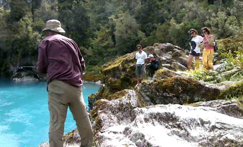
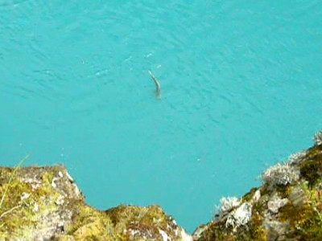
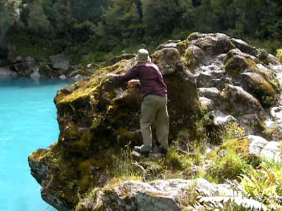

釣行日誌 ＮＺ編 「翡翠、黄金、そして銀塊」
「ネットを頼む！」
2010/12/04(SAT)-3
大峡谷の吊り橋を渡ってから遊歩道を左に外れ、ロッドを痛めないように気を付けながら林の中を藪こぎして進むと断崖の上に出た。二人して静かに水面を見渡していくと、さっき吊り橋から見たのとは別のブラウンが下流側に見えた。ところがここは背後がブッシュでキャストしづらいので、別の獲物を求めて上流側に歩いて行く。30mほど進むと、ちょっと開けた場所があり、そこの流心にまたしても大物が定位している。足元は凸凹の岩で良くないが、バックキャストのスペースはなんとかあった。ブリントさんはどうやらここで一戦交えるらしい。
『え？！ ここから？』
垂直に切り立った断崖下の水面まではおよそ７～８m。運良くロングキャストに成功して鱒がヒットしたとしても、あんな大物をどうやって取り込むのか？
僕の懸念をよそに、ブリントさんはさっさとケースからロッドを取り出し、リールとラインをセットしてゆく。あの魚の様子なら、ブラウンはドライに喰ってくるだろう、というのが彼の読みであった。実績のあるロイヤルウルフを結ぶと、慎重にキャスティングポジションに付いた。
僕も釣り支度をしようかと一瞬考えたものの、もしも足を滑らせて川に落ちたらはるか下流まで流されて行かないと、岸に上がる場所は無いな....水温もかなり冷たかったし.....などとビビリが入ってしまい、即座に専属カメラマンへと転向した。折からの強風で帽子が飛ばされそうになる。まずまず広い岩棚の上には２グループの観光客たちがくつろいでおり、突如現れた釣り人に興味津々のようであったが、気を使ってくれたのか、静かに見守ってくれている。
いよいよフォルスキャストが始まった。鱒の位置まではおよそ15mほどだろうか。崖の高さもあるのでブリントさんなら楽に射程内である。しかし左手下側から強風が吹き上げてくるので、なかなか思うようにキャストできない。彼のシャツとズボンが風にはためく。５、６回試みた後、フライが鱒の右上流1.5mあたりに落ちた。ドラグを回避すべく素早くメンディングしながら流していくと、流下物に気づいたブラウンがゆっくりと右に泳ぎ出した。
『来た来た来たっ！』
と念じつつ見つめていると、鱒が大きく口を開けてロイヤルウルフを飲み込んだ。しっかり間を取っての熟練の合わせ。逸走を始めた鱒に引かれてロッドが大きく曲がる。見とれていて録画ボタンを押すのを忘れ、ファイトが始まってから慌てて撮影を開始する。ブリントさんは極めて落ち着いており、
「タケシ！ ロッドを避けておけよ！」
と声をかけてくれる。僕は竿袋に入ったロッドを崖の端に置いたままだったのだ。こりゃイカンとブリントさんのロッドさばきを邪魔しないように近づいて竿を手に取り、奥の立木の根元に置いた。そうこうする間も鱒は休むことなく抵抗を続けており、真下の足元へとラインを引っ張ってゆく。それまで静かに見ていたギャラリーたちもファイトが始まったことに気づき、声をかけてきた。
「魚が掛かったの？」
「何が釣れるの？」

ブリントさんは帽子が飛ばされないように手で押さえながらロッドを保持し、観光客たちの質問に余裕で答えている。
「ブラウントラウトが喰いついたんだ。けっこう大きいぞ。で、あんた方はどこから来たのかね？」
「シドニー」
などの受け答えをしつつ、悪い足場にステップを確保しつつブリントさんのファイトが続く。大物ブラウンは下流側に走った後に水面まで出てきたが、いっこうに弱る気配は見せずに抵抗を続ける。鱒がこちら岸の崖下に近づいて来た。崖の端まで出ないとラインが岩に擦れてしまうので、ブリントさんはギリギリまで岩場の先端に出て対応する。

「ティペットはどのくらいのを使ってるの？」
「８lb！ ６lbじゃあちょっと心細いな！」
それなら大丈夫だろうと思ったが、問題は取り込みだった。いくら８ポンドのティペットでも、サビキのアジ釣りでは無いのだから、この高さから一本釣りで上げることは出来ないだろう。鱒は水面でジャンプしてまた深みに消える。しばらく鱒と釣り人とのファイトを見ていた観光客たちは、
「それじゃぁ頑張ってね！
「 Good Luck! 」
などとブリントさんに声をかけてから、立ち去っていった。この結末を見ずに帰るとは！ 釣りに興味の無い人はそんなものなのだろうか？
なおもファイトは続いている。ブリントさんは、何か秘策があるのか、ラインのテンションを保ちつつ、岩場に生えた灌木を避け、シダを踏み分け、徐々に上流側へと岩場を移動し始めた。ところが背丈ほどの高さの岩盤に遮られ、それ以上進めなくなってしまった。何とか右側に回り込んで岩棚を乗り越えようとするが、ちょうど真下にボコンと張り出した大岩があり、それにラインが触りそうになる。
「下に岩が張り出しているから気を付けて！ ラインが擦れるよ！」

焦ってめちゃくちゃな英語で呼び掛けると、ブリントさんは巧みにロッドを操作して、ラインを岩に擦ることなく岩棚を乗り越えて行った。振り返った彼が、
「ネットを頼む！」
と呼んだので、いったん撮影を止め、急いでブリントさんのバックパックからランディングネットを取り外して駆けつける。ネットを受け取った彼は、それを腰のベルトに差してから左手で保持したロッドで鱒をいなしつつ、右手を切り立った岩について、ぽっかり空いた岩盤の裂け目へと慎重に降り始めた。そこは急勾配ではあるが、注意深く足を運べばなんとか水面近くまで降りられそうだった。
釣行日誌ＮＺ編 目次へ
サイトマップ
ホームへ
お問い合わせ